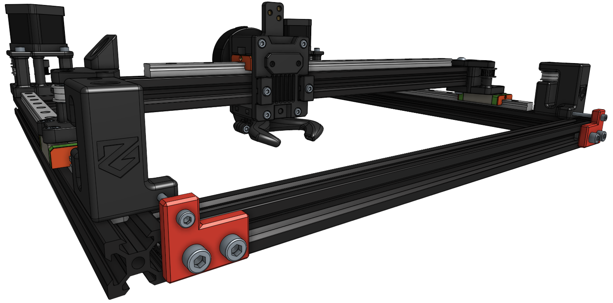

Our first attempt at documentation! Found any errors in this document? Please report it on our Discord server.
This contains all the information you need to build your personal ZeroG printer.
If you’re not an expert with cad we’d suggest you to read our Documentation carefully. Do you have any questions? Hit up our Discord!
The image bellow contains the Mercury One.1 (Eva compatible).
